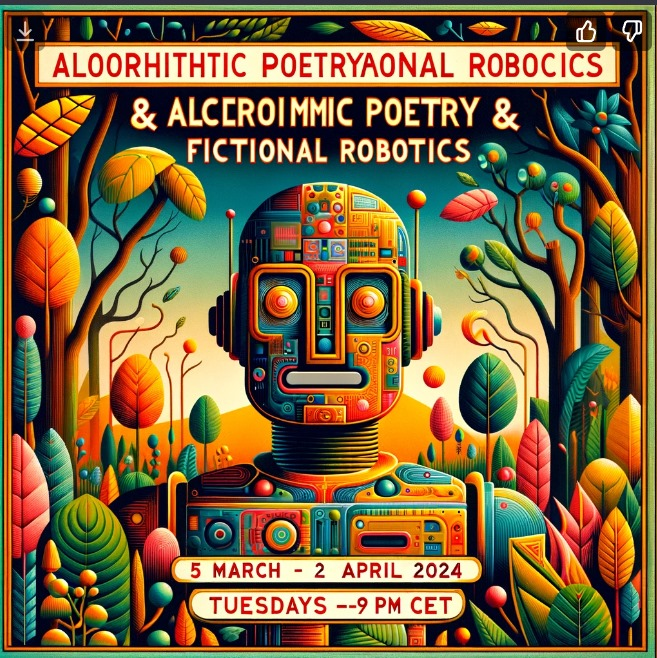

Algorithmic Poetry of Fictional Robotics
This 5-week online course was taught by Mario and Kit in
Fall 2023 and
Spring 2024 at Berlin's
School of Machines, Making and Make-Believe. We are in the process of making this course availablein the form of videos and interactive exercises! Stay tuned.
The Course
How have historical developments in robotics, speculative fiction, and algorithmic poetry influenced our understanding of the present and the future?
Where do robots go when they are broken? In this course, we will consider waste and reconfiguration in robot speculative fiction, visiting various robotic junk heaps. Our discussion will reference Donna Haraway through a more recent writing on the "compost heap" and the role of speculative fiction in collective imaginings. We will also discuss Low-tech operations -the appropriation, the distortion of images and media, the work with waste and the deformations of technique- to emphasize an esthetic discourse as a strategy to dismantle the hyper-tech dependent universe, allowing us to elude to the seduction of technical novelty and storytelling.
Each session will contain a one hour lecture covering historical or foundational ideas combined with contemporary perspectives - either in the form of short essays or science fiction readings. The second hour will be spent on building an interactive science fiction story about robots, using Twine (an interactive storytelling tool).
What is a robot, anyway? Each of the latter 4 sessions explores a different aspect of robots in science fiction, and its grounding in reality. While recent technical advances in automation have felt (and at times been) unprecedented, concerns and speculations from throughout the 20th century have explored topics that are still relevant: problems of mechanized labor; incomprehensible, alien logics of potential computer consciousness; cyborg extension or modification of human potential through technology; and technological waste.
And furthermore, what is a story? In this class, all participants will be invited to work on an interactive story project. Interactive "choose-your-own-adventure" stories with complex branches are difficult to create, so we will speculate about imaginary automation and other aspects of robotics, all the while encountering real, current automation as a collaborator.
In the first two sessions, all the necessary tools will be introduced. We will be approaching our speculative journey with Twine, an open-source tool for telling interactive, nonlinear stories. We will learn how to embed HTML, CSS and small JavaScript snippets to create worlds, subjective robotic perspectives and possible conceptual entanglements while also approaching some experimental coding exercises with ChatGPT.
Weekly Topics
Week 1: Intro to algorithmic poetry and making stories about robots with the help of robots
In this first class, we will all introduce ourselves, and share motivations and expectations for the class. In the second half of the class, we will approach different theoretical aspects of literary texts, review critical conceptual notions of electronic literature artworks, and use this perspective to propel ourselves into mechanical speculations.
We will consider the first work of electronic literature, The Love Letter Generator (1952) which used Alan Turing's random number generator to create combinatory love letters, and Oulipo, a secret and unconventional group founded in 1960, who considered that it was not randomness nor chance, but the controlled combination between mathematics and language where the future of literature was. They called it potential literature.
Week 2: Robot Labor
This week's discussion will focus on how real and speculative robots relate to labor and its mechanization. The term "robot" itself is generally considered to have been coined in 1921 by the Czech writer Karel Čapek, deriving from the Czech word "robota," or forced labor, as done by serfs. We will use short readings to kick off discussion, as well as instances of fictional robots in art and popular culture. This session will also contain the first introduction to the course project structure, and to Twine and other tools to be used in this course.
Week 3: Swarms & Alien Logics
When you picture "a robot," what do you see? What is embodiment in real and speculative robotic systems? We will look at networked swarms of bots, such as in nanorobotics, and at how non-human (or uncannily-human) embodiment suggests alien, "other" logics in fiction. We will also discuss what it means to operate a robot, and how doing so changes us as humans. In the technical part of this session, we will look at how to incorporate design and multimedia elements, like images and sound, into Twine stories.
Week 4: Clones & Cyborgs
Enter the realm of identity reimagined as we delve into the provocative territory of Clones & Cyborgs. Inspired by reading fragments of Haraway's seminal "A Cyborg Manifesto," and works of artists working with robotic and cyborg imagery, technology, and concepts, navigate the blurred lines between humanity and technology. Explore how cloning and cybernetic enhancements challenge traditional notions of self, weaving a narrative of morphing identities and fluid boundaries. We will craft our own visions of post-human and post-robotic existence, by navigating between digital and physical robots through the lens of the uncanny. For the second half of this session, we will facilitate a workshop on participants' Twine story works in progress, holding space to talk about whatever is most relevant to each project: storytelling/worldbuilding; technical challenges, or generating ideas. In such a workshop session, we will ask: what is the speculative robotic 'other' that is proposed? Why is it proposed? What does a particular robot imaginary allow us (as readers/viewers) to think through? How can the interactive story format support this thought process?
Week 5: The (Techno)compost Heap
Where do robots go when they are broken? We will consider waste and reconfiguration in robot speculative fiction, visiting various robotic junk heaps. Our discussion will draw from more recent work by Donna Haraway, as well as Elvia Wilk, on compost, rot, decay, and transformation in speculative fiction. We will also discuss Low-tech operations -the appropriation, the distortion of images and media, the work with waste and the deformations of technique- to emphasize an esthetic discourse that works as a strategy to dismantle the hyper-technologized and dependent universe of the contemporary circuit, and allows us to elude the seduction of technical novelty.